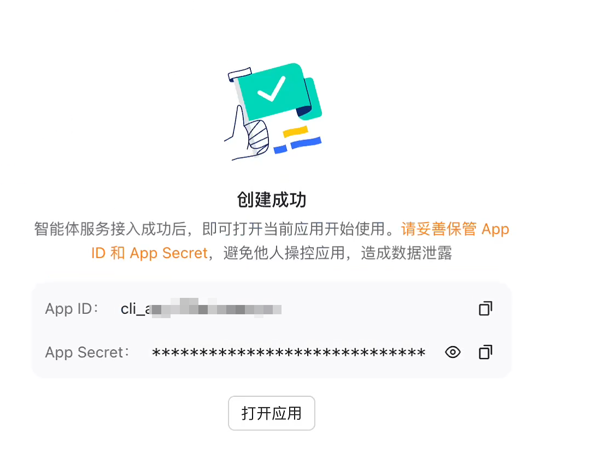
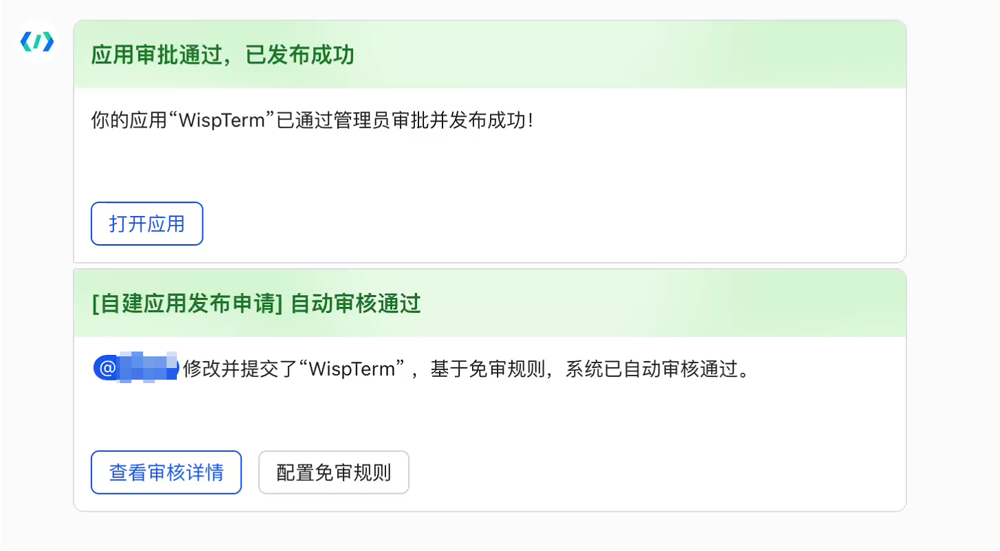
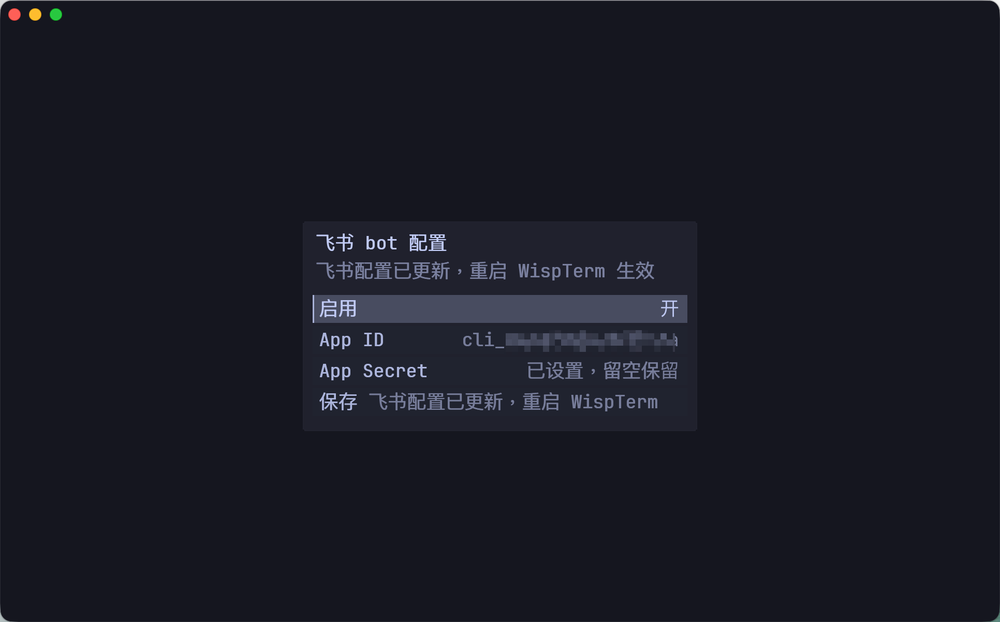

DeepSeek 优先的 Agent 会话
在 WispTerm 里完成 Agent 工作
打开一个原生 AI Agent 标签，让它读取终端上下文、运行本地 PowerShell 或 cmd 工具、配合 WSL/SSH 会话、加载本地 Skills，并把工具确认留在终端 UI 内。
理解终端现场的 AI
WispTerm 把 Agent 工作留在你已经打开的 Shell 状态旁边。它不需要额外的浏览器工作区，就能理解标签、分屏、本地命令、WSL 和 SSH 会话。
DeepSeek V4 Profile
默认 Profile 面向 OpenAI 兼容的 Chat Completions，Base URL 为 https://api.deepseek.com，模型为 deepseek-v4-pro。需要更轻快时可使用 deepseek-v4-flash。
会话内切换模型
用 /model、/model <name>、中文别名 /模型，或点击模型标签，把当前聊天或 Copilot 会话切换到另一个已保存 profile。WispTerm 会为新模型总结此前上下文，不会改变全局默认 profile。
理解终端的工具
Agent 工具可以列出可见终端 surface，选择目标标签或面板，运行本地命令，并向当前 REPL、WSL 或 SSH 上下文输入内容。
带确认的执行
当权限为 ask 时，工具请求会先显示在 WispTerm 中再执行。可信的无人值守任务可使用 auto，普通工具会自动执行，但访问受保护路径和危险命令仍会确认；只有想完全交给 Agent 时，才使用 full。
可恢复的对话
Agent 会话会持久化保存。可以在命令中心用 Copilot History 重开；选择器会按日期分组已保存的 AI Chat 与 Copilot 侧栏对话，可按标题和模型搜索，并用 Tab 切换来源筛选。
Markdown 导出
运行 Export AI Chat Markdown 可保存完整对话；运行 Export AI Chat Markdown Clean 会只保存用户输入和最后结果，不包含 thinking 或工具细节。WispTerm 会弹出保存对话框，并复制保存路径。
配置 DeepSeek V4
按 CtrlShiftT 打开会话启动器，选择 AI Agent，然后填写 AI Profile。如果还没有 Profile，WispTerm 会在首次启动 Agent 前先打开配置表单。
推荐 Agent Profile
| Profile name | DeepSeek |
|---|---|
| Base URL | https://api.deepseek.com |
| API key | 你的 DeepSeek API Key；如果设置了 DEEPSEEK_API_KEY，可以留空 |
| Model | deepseek-v4-pro |
| Protocol | chat_completions；OpenAI Responses API Provider 使用 responses |
| Thinking | enabled |
| Effort | 重度编码 Agent 建议 max；WispTerm 内置默认值是 high |
| Stream | false |
| Agent | true |
环境变量 API Key
当 Profile 的 Base URL 指向 DeepSeek，并且 Profile 内没有保存 API Key 时，WispTerm 会从进程环境中读取 DEEPSEEK_API_KEY。
# Windows（PowerShell）
$env:DEEPSEEK_API_KEY = "sk-your-deepseek-api-key"
# 持久保存：
[Environment]::SetEnvironmentVariable("DEEPSEEK_API_KEY","sk-your-deepseek-api-key","User")
# macOS / Linux（Shell）
export DEEPSEEK_API_KEY="sk-your-deepseek-api-key"
# 持久保存：将上面一行加入 ~/.zshrc 或 ~/.bashrcDeepSeek V4 模型提供 1M 上下文，并通过 thinking 与 reasoning_effort 支持思考模式。Chat Completions 仍是默认协议；Responses Profile 会使用 instructions、input 和 Responses 风格函数工具。
Agent 工具与边界
Agent 可以辅助本地工作，同时不会混淆它正在控制哪个终端。WispTerm 要求写入类工具先明确选择目标 terminal surface。
本地命令
Shell 命令会尽量作为隐藏的后台子进程运行，因此执行工具时不会弹出额外控制台窗口。Windows 上使用 powershell_exec，macOS/Linux 上使用 shell_exec。
WSL 与 SSH 路由
Agent 可以检查可见终端 surface，用 ssh_profile_save 保存 WispTerm SSH profile，并把写入路由到选中的 WSL 或 SSH 会话，而不是只依赖当前焦点猜测。
明确选择终端
工具调用会使用 terminal_list 返回的 surface ID。写入前，Agent 会通过 terminal_select 明确目标。
权限模式
日常使用建议保持 ai-agent-permission = ask。需要无人值守但仍保留私有文件和危险命令保护时使用 auto。只有完全信任任务和当前工作区时，再使用 full。
# AI Chat Agent 工具
ai-agent-enabled = true
ai-agent-permission = ask # ask | auto | full
ai-agent-command-timeout-ms = 60000
ai-agent-output-limit = 16384Skills 与快速入口
Skills 可以把可复用指令放在终端旁边。它们会被加载到下一次请求，并作为可重放上下文保存进聊天历史。
Skill 搜索位置
WispTerm 会在平台配置目录（Windows：%APPDATA%\wispterm，macOS：~/Library/Application Support/wispterm）的 skills/ 和 plugins/skills/ 子目录，以及可执行文件同级和当前工作目录下发现 SKILL.md。
Skill Center 也可以管理本地可执行工具。导入的工具会保存在 WispTerm 配置目录下，用 SKILL.md 描述，并且只有启用后的工具才会暴露给 AI Agent 会话。工具可以提供 --skill，也可以在同级目录携带 SKILL.md；如果没有任何说明，WispTerm 可以用已配置的 AI profile 生成草稿供你审阅。
加载 Skill
在 AI Agent 标签中输入 $skill-name your request，即可为下一次请求加载指定 Skill，不需要改全局配置。
第三方工具
WispTerm 也可以配合外部工具使用。例如 Claude ChatMap 是一个本地 Claude Code 会话索引面板，按文件夹整理历史，并可通过 wisptermctl 把选中的会话恢复到 WispTerm 标签页。这类社区工具不随 WispTerm 捆绑。
Slash Commands
/commands 会列出当前命令集合。常用命令包括：用 /model 切换 profile，用 /cwd 设置本次对话工作目录，用 /permission 切换 Agent 审批模式，用 /export 导出 Markdown，用 /distill 沉淀可复用 Skill，以及用 /remember / /memory / /forget 管理长期记忆。
/loop 可以按固定间隔重复发送 prompt，/watch 可以按每日时间或一次性时间发送 prompt。/clear、/rewind、/resume、/skills、/reload-skills 和 /reload-commands 用于管理对话生命周期与本地命令刷新。
查询快捷命令
在输入框中使用 $websearch <query>、$webread <url | file path> 或 $pubmed <query>，可以不发起普通 AI 回合，直接执行只读查询并把结果写入对话。$websearch 使用配置中的 jina-api-key；$webread 可匿名读取；$pubmed 匿名使用 NCBI PubMed。
命令面板入口
按 CtrlShiftP 后运行 New Agent 可直接新开 Agent；运行 Copilot History 可恢复历史会话，也可以从当前 AI 标签导出 Markdown 记录。
飞书/Lark 直连控制
使用飞书企业自建应用，把飞书消息发送到 WispTerm 的 Copilot/Agent 流程。桌面端会在启动时创建长连接，所以先保存凭证，再重启 WispTerm。
开放平台应用
进入 https://open.feishu.cn/app 打开你的自建应用；如果还没有应用，就新建一个企业自建应用。国际版 Lark 对应接口域名为 https://open.larksuite.com。
权限基线
权限配置建议直接参考 openclaw/hermes 这个自建应用；它已经配好了 WispTerm 飞书通道需要的消息、卡片、媒体和事件相关能力。
在 WispTerm 中配置
打开命令中心，输入 feishu，运行 Feishu: Configure，填写 App ID 和 App Secret，然后保存。重启 WispTerm 后生效。
配置文件回退
也可以设置 feishu-enabled、feishu-app-id、feishu-app-secret，以及可选的 feishu-allowed-user。ID/secret 留空时会回退读取 FEISHU_APP_ID 和 FEISHU_APP_SECRET。



feishu，保存凭证，然后重启 WispTerm。故障排查
Missing API key
启动 WispTerm 前设置 DEEPSEEK_API_KEY，或把 API Key 保存到 AI Profile。
认证或余额错误
遇到 401 时检查 API Key 和 Base URL。遇到付费相关错误时，检查 DeepSeek 开放平台余额。
工具没有执行
确认 Profile 的 Agent 字段是 true，并在权限为 ask 时确认工具卡片。
模型别名
请使用当前 DeepSeek V4 模型 ID，例如 deepseek-v4-pro 或 deepseek-v4-flash，不要继续依赖旧别名。要把正在进行的对话切到另一个已保存 profile，可用 /model 或点击模型标签。
参考：DeepSeek 模型详情 与 DeepSeek 思考模式。